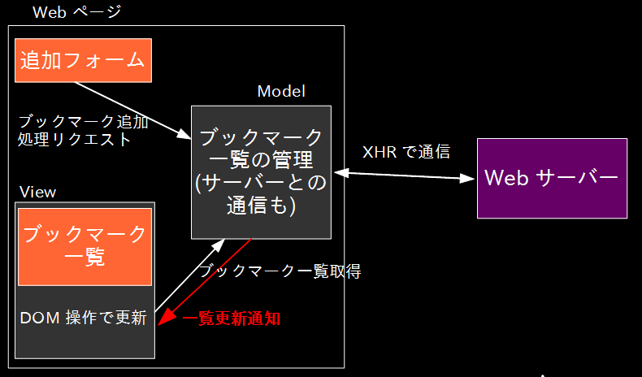

MVC
概要

処理を Model, View, Controller に分類
- Model: ビジネスロジック全部
- View: 見た目の処理
- Controller: ユーザーの操作に応じて Model を呼び、更新する
元々は GUI プログラミングで発明された概念 1
サーバーサイドの WAF でよく使われるアーキテクチャ 2
- Ruby on Rails, CakePHP など
- クライアントサイドでは Ajax が絡んだりして、より複雑
代表的なフレームワーク
- Backbone.js
- Mithril
ブックマーク一覧を MVC で

- http://heim.ifi.uio.no/~trygver/themes/mvc/mvc-index.html ^
- サーバーサイドでの MVC とは本来の MVC とは異なり、 MVC2 などと呼ばれる ^